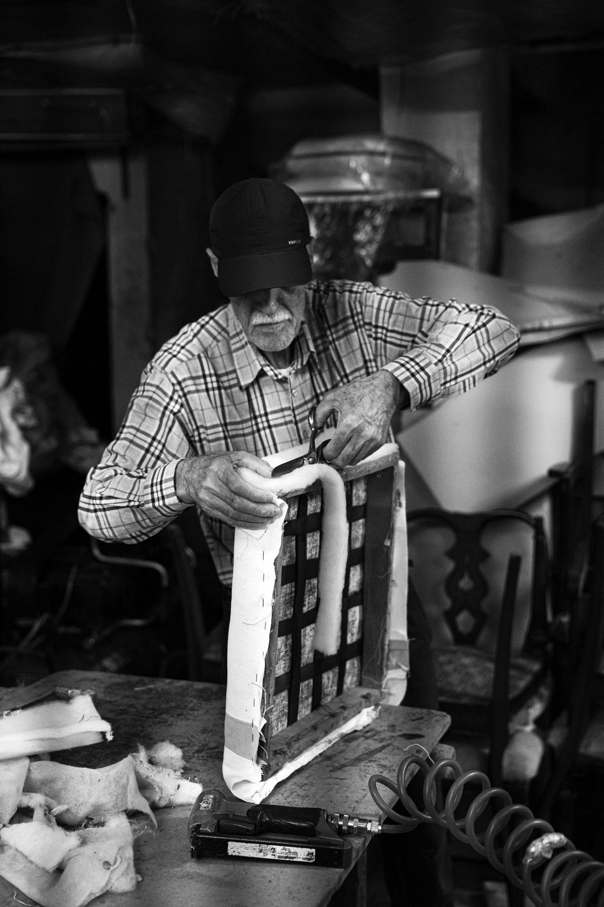

Garniture traditionnelle
Sangles de jute, ressorts guindés à la main, crin et toile : la méthode d'origine pour les sièges anciens et de style.
Tapissier d'ameublement · Paris
Réfection de sièges en garniture traditionnelle ou moderne, recouverture de canapés, chaises, têtes de lit, rideaux. Envoyez-nous une photo : vous recevez un devis sous 48 h, et nous venons chercher le meuble chez vous.
Vous pouvez aussi passer à l'atelier avec votre chaise, sans rendez-vous.

Cliquez sur votre situation : le formulaire se remplit tout seul.
L'atelier
Sangles de jute, ressorts guindés à la main, crin et toile : la méthode d'origine pour les sièges anciens et de style.
Mousses haute résilience et ouatine pour les sièges contemporains, les banquettes et les chaises du quotidien.
Recouverture, reprise des assises, coussins de dossier regarnis. Enlèvement et livraison compris.
Refaire six chaises d'un coup, c'est notre quotidien : même tissu, même tenue, même rendu.
Têtes de lit capitonnées, bancs de pied de lit, coussins de banquette de fenêtre.
Mesures chez vous, confection à l'atelier, pose des tringles et des rideaux.
Comment ça se passe
Face, profil et l'état de l'assise : cela suffit pour un premier devis.
Prix de la main-d'œuvre, du tissu et des fournitures, délai annoncé.
À l'atelier parmi nos échantillons, ou avec votre propre tissu.
On vient chercher le meuble et on vous le rapporte, refait, à la date prévue.
Réalisations récentes
Paris 11e · Fauteuil Voltaire
Vincennes · Six chaises de salle à manger
Paris 15e · Canapé trois places
Nos engagements
« Le fauteuil de ma grand-mère était fichu. Il est plus confortable qu'avant et le velours choisi est superbe. »
« Devis reçu le lendemain sur photo, enlèvement et livraison impeccables. Les six chaises sont comme neuves. »
Questions fréquentes
Votre question n'est pas là ?
Appelez-nous au 01 99 00 37 25.
Le prix dépend de la taille du siège, du type de garniture (traditionnelle ou moderne) et du tissu choisi. Envoyez-nous une photo : vous recevez un devis détaillé sous 48 h.
En général de trois à six semaines selon le travail et la disponibilité du tissu. Le délai exact figure sur le devis.
Oui. Nous vous indiquons le métrage nécessaire avant l'achat, en tenant compte des raccords de motifs.
La traditionnelle (ressorts, crin) convient aux sièges anciens et de style et dure très longtemps. La moderne (mousse) est adaptée aux sièges contemporains et coûte moins cher. Nous vous conseillons selon le meuble.
Oui, à Paris et en petite couronne. Vous pouvez aussi le déposer à l'atelier, rue de Charonne.
Non, nous sommes spécialisés dans l'ameublement. Nous pouvons en revanche vous orienter vers un sellier.
Devis gratuit
Décrivez le meuble en quelques mots. On vous rappelle pour convenir de l'envoi des photos et vous remettre un devis sous 48 h.
Du mardi au samedi, 9 h 30 à 18 h 30
42 rue de Charonne, 75011 Paris
Nous intervenons à Paris (tous arrondissements), Montreuil, Vincennes, Saint-Mandé, Bagnolet, Les Lilas, Charenton-le-Pont, Boulogne-Billancourt, Neuilly-sur-Seine.